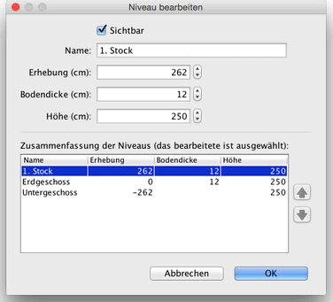

Sie können den Namen, die Anhebung und die Höhen eines Niveaus bearbeiten, indem Sie seinen Reiter doppelt anklicken, oder indem Sie im Menü Plan > Niveau bearbeiten wählen.
Im Einstellungsbereich eines Niveaus können dessen Attribute geändert werden. Zudem wird eine Tabelle angezeigt, in der sämtliche Niveaus der Wohnung aufgeführt sind. Darin entspricht die ausgewählte Zeile dem momentan bearbeiteten Niveau.

In der 3D-Ansicht wird die Dicke des Bodens zum Zeichnen des vertikalen Rands um einen Boden verwendet. Diese Flächen sind am Rand von Löchern im Boden und am Rand eines Zwischenstocks oder Balkons sichtbar.
Die Anhebung eines Niveaus kann positiv oder negativ sein. In letzterem Fall wird der Boden in der 3D-Ansicht stets automatisch weiter ausgehöhlt, wann immer ein Möbelstück, ein Raum oder ein abgeschlossener Bereich aus Wänden im Untergrundniveau eingefügt wird. Diese Feature kann dazu verwendet werden, einen Swimming Pool zu erzeugen oder einen Keller mit einem oder mehreren Stockwerken zu erstellen. |